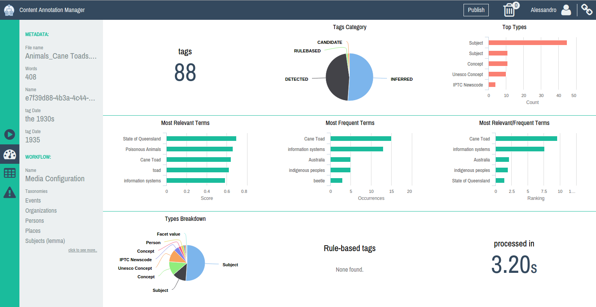
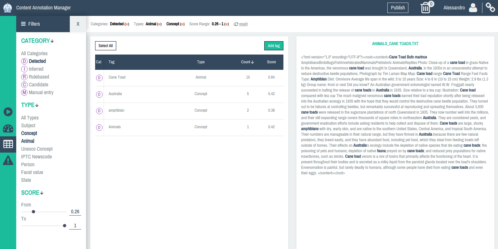

Master Thesis
A web interface for the Content Annotation Manager
A presentation by Alessandro Menduni
The context
Content is quickly becoming more important than software itself
Semantic Web
Control and enrich
Understand and act
Combining knowledge with content
- Mining
- Annotating
The problem
Meet CAM
(Content Annotation Manager)
A web application and an annotation system
Features in brief:
- Trigger annotation
- Display results
- Manual review
- Troubleshooting
What are the challenges?
UX / data visualization
- Tough to convey so much information
- Open-world vs rigid structure
Difficult task
It's useful but not (yet) usable
Goals
A dashboard for quick overview
The human indexer
Compelling demos now, a real tool tomorrow
The solution
The dashboard
The Review screen
Future work
Persistence
Will open up to new possibilities:
- Resume suspended activities
- Long-term statistics
Cluster-based aboutness assessment

Cluster-based aboutness assessment